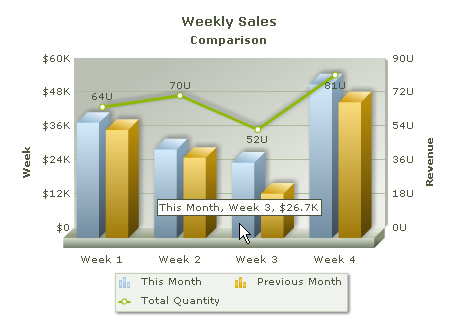

| Creating Combination Chart | ||||||||||||||||||||||||
Combination chart has two y-axes. The y-axis on the left hand side is called Primary y-axis and that on the right hand side is called Secondary y-axis. Combination charts are used when we intend to compare two different types of data on the same chart, for example, if we want to plot Weekly Sales Revenue of two consecutive months and total units sold on the same chart, we have to use a Combination Chart. See the image below and note that the two y-axes are representing different data units. Let's add some more data to the existing Table for Multi-series chart. We will add a column that tabulates Total Quantity Sales. |
||||||||||||||||||||||||
|
||||||||||||||||||||||||
Before you go further with this page, we recommend you to please see the previous pages Creating First Chart & Creating Multi-series chart as we start off from concepts explained in that page. Here is the code that builds up this Combination chart: |
||||||||||||||||||||||||
<%@LANGUAGE="VBSCRIPT"%>
<%
'Include FusionCharts ASP Class
%>
<!--#include file="../Class/FusionCharts_Gen.asp"-->
<%
dim FC
'Create FusionCharts ASP class object
set FC = new FusionCharts
'Set chart type to Column 3D + Line Dual Y-Axis Combination Chart
Call FC.setChartType("MSColumn3DLineDY")
'Set chart size
Call FC.setSize("450","350")
'Set the relative path of the SWF file
Call FC.setSWFPath("../FusionCharts/")
dim strParam
'Define chart attributes
strParam="caption=Weekly Sales;subcaption=Comparison;xAxisName=Week;
pYAxisName=Revenue;sYAxisName=Total Quantity;
numberPrefix=$;sNumberSuffix= U"
'Set chart attributes
Call FC.setChartParams(strParam)
'Add category names
Call FC.addCategory("Week 1", "", "")
Call FC.addCategory("Week 2", "", "")
Call FC.addCategory("Week 3", "", "")
Call FC.addCategory("Week 4", "", "")
'Add a new dataset with dataset parameters
Call FC.addDataset("This Month","showValues=0")
'Add chart data for the above dataset
Call FC.addChartData("40800", "", "")
Call FC.addChartData("31400", "", "")
Call FC.addChartData("26700", "", "")
Call FC.addChartData("54400", "", "")
'Add another dataset with dataset parameters
Call FC.addDataset("Previous Month","showValues=0")
'Add chart data for the second dataset
Call FC.addChartData("38300", "", "")
Call FC.addChartData("28400", "", "")
Call FC.addChartData("15700", "", "")
Call FC.addChartData("48100", "", "")
'Add third dataset for the secondary axis
Call FC.addDataset("Total Quantity","parentYAxis=S")
'Add data values for the secondary axis
Call FC.addChartData("64", "", "")
Call FC.addChartData("70", "", "")
Call FC.addChartData("52", "", "")
Call FC.addChartData("81", "", "")
%>
<html>
<head>
<title>Column 3D + Line Dual Y-Axis Combination Chart Using FusionCharts ASP Class</title>
<script language='javascript' src='../FusionCharts/FusionCharts.js'></script>
</head>
<body>
<%
'Render Chart with JS embedding Method
Call FC.renderChart(false)
%>
</body>
</html> |
||||||||||||||||||||||||
As you can see in the above code, the process of creating Combination charts Multi-Series charts is same. Here also we use multiple datasets. Some datasets are specified for primary Y-Axis and some for the secondary Y-Axis. We need to specify which dataset belongs to which Y-Axis. Let's see what we have done to render a combination chart. The steps are mentioned below.
|
||||||||||||||||||||||||
Please go through FusionCharts ASP Class API Reference section to know more about the functions used in the above code. This code renders the Combination Chart that we needed. |